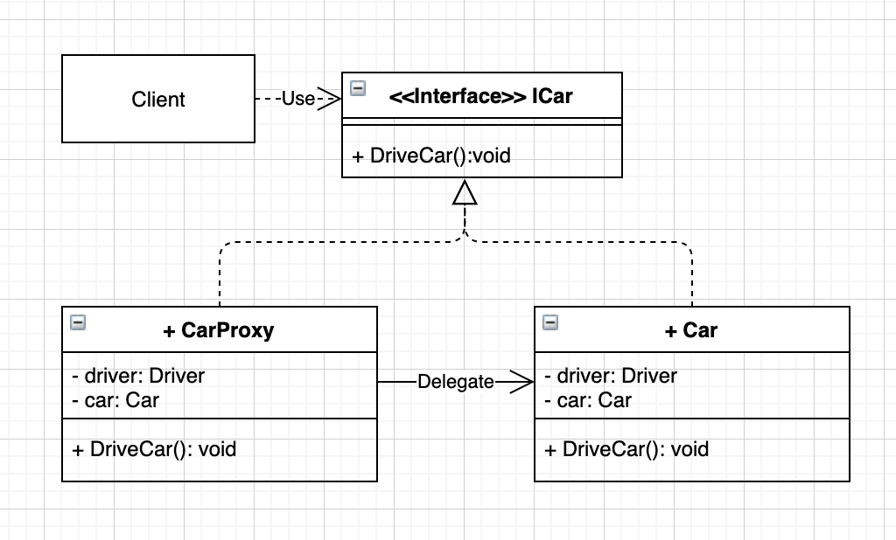

Proxy pattern is commonly used in distributed algorithms.
What it looks like
Let’s start with this example provided by Wikipedia: Proxy pattern:
1
2
3
4
5
6
7
8
9
10
11
12
13
14
15
16
17
18
19
20
21
22
23
24
25
26
27
28
29
30
31
32
33
34
35
36
37
38
39
40
41
42
43
44
45
46
47
48
49
50
51
52
53
54
| interface ICar
{
void DriveCar();
}
// Real Object
public class Car : ICar
{
public void DriveCar()
{
Console.WriteLine("Car has been driven!");
}
}
// Proxy Object
public class ProxyCar : ICar
{
private Driver driver;
private ICar realCar;
public ProxyCar(Driver driver)
{
this.driver = driver;
this.realCar = new Car();
}
public void DriveCar()
{
if (driver.Age < 16)
Console.WriteLine("Sorry, the driver is too young to drive.");
else
this.realCar.DriveCar();
}
}
public class Driver
{
public int Age { get; set; }
public Driver(int age)
{
this.Age = age;
}
}
// How to use above Proxy class?
private void btnProxy_Click(object sender, EventArgs e)
{
ICar car = new ProxyCar(new Driver(15));
car.DriveCar();
car = new ProxyCar(new Driver(25));
car.DriveCar();
}
|
Based on the code I could draw this UML:

When to use it
Use proxy when you want to add new functions/change how components communicate but do not want to change the existing component (the Real Subject).
- A proxy is a wrapper or agent object that is being called by the client to access the real serving object behind the scenes.
- For the client, usage of a proxy object is similar to using the real object, because both implement the same interface.